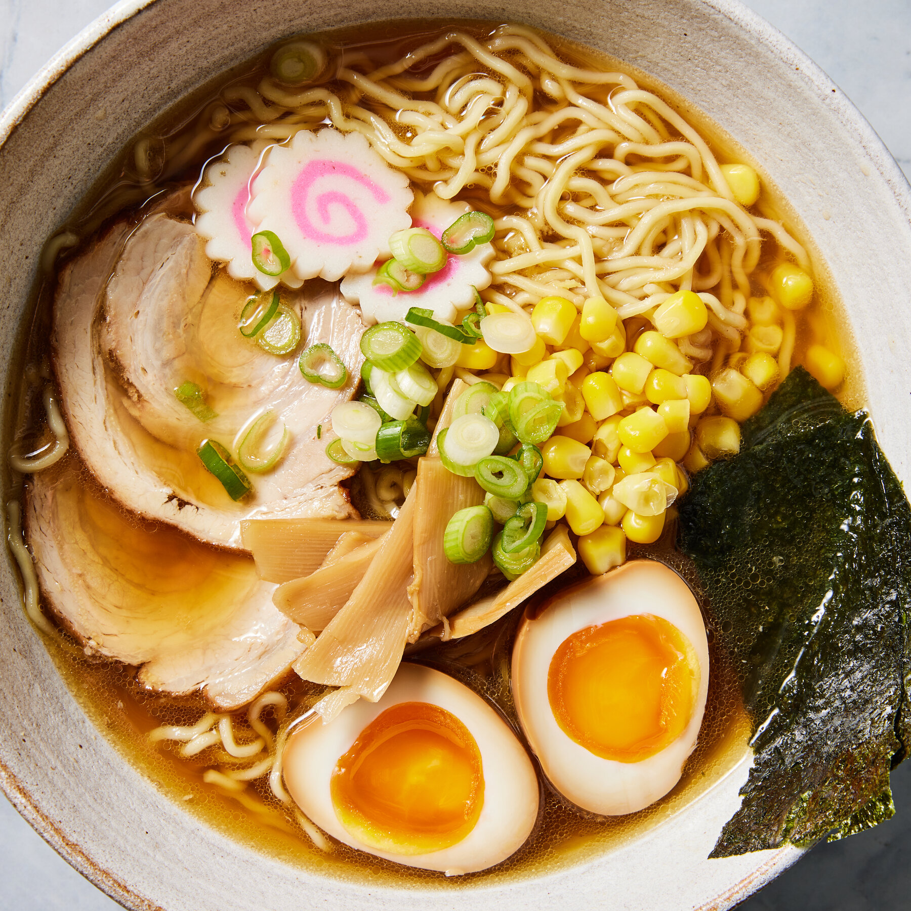

Home

Ramen is a Japanese noodle dish with roots in Chinese noodle dishes. It is a part of Japanese Chinese cuisine.
Ingredients
- Chicken stock (unsalted)
- Spring onions (scallions)
- Garlic
- Ginger
- Fresh red chili (or dried red chili)
- Dark soy sauce
- Light soy sauce
- Mirin
- Fresh or dried shiitake mushrooms
- Dried ramen noodles
- Cayenne pepper (optional)
- Boneless chicken thighs (skin on or off)
- Brown sugar
- Toppings (optional)
Steps
- Bring the stock to a boil over medium high heat (or high heat, depending on your stove), with all the aromatics.
- Reduce the heat to a medium and let it simmer to infuse all the flavors.
- Cook the noodles separately.
- Marinate the chicken in a soy, dark soy, and mirin mix.
- Grill the chicken in an oven or pan.
- Assemble your ramen, add the toppings and enjoy!